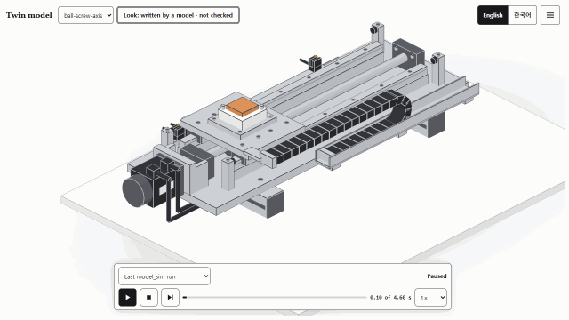
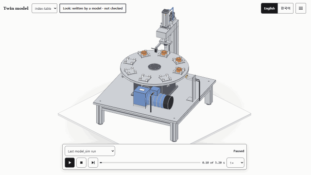
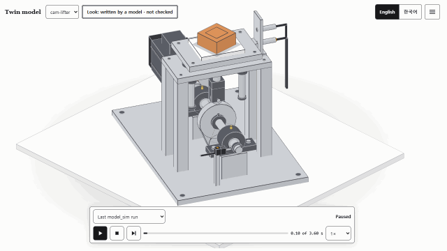

What it does하는 일
A local MCP server (stdio) with five tools and a local 3D page on 127.0.0.1.
표준 입출력(stdio)으로 말하는 로컬 MCP 서버입니다. 도구 다섯 개와 127.0.0.1에서 여는 로컬 3D 화면이 있습니다.
An AI client that writes models designs the twin model with the bundled skill. The server only checks, simulates, stores and draws it.
모델은 AI 클라이언트가 함께 들어 있는 스킬을 보고 설계합니다. 서버는 검사하고 시뮬레이션하고 저장하고 그릴 뿐입니다.
- model_catalog
- model_draft
- model_get
- model_sim
- model_render
- PLCnot needed필요 없음
- Cloud service클라우드 서비스none없음
- Dependency외부 크레이트
serde_jsononly하나

model_sim cycle (4.2 s) played at 1×로컬 3D 화면의 픽앤플레이스 예시: model_sim 한 사이클(4.2 s)을 1×로 재생How a model is made모델을 만드는 순서
The steps of the bundled skill skills/twin-modeling.
함께 들어 있는 스킬 skills/twin-modeling의 순서입니다.
In the AI clientAI 클라이언트에서
- Identify the machine.기계를 알아봅니다.
- Find the working principle.작동 원리를 찾습니다.
- Write the principle sheet (8 parts).원리 시트(8개 항목)를 씁니다.
- Map each part to kinds, presets or primitives.각 부분을 종류, 프리셋, 기본 요소에 대응시킵니다.
- Write the twin model JSON. Signals are pins; there is no PLC address.트윈 모델 JSON을 씁니다. 신호는 핀이고 PLC 주소는 없습니다.
- Check it yourself.직접 검사합니다.
With the server서버와 함께
- Draft: send it with
model_draftand read thefacts.초안:model_draft로 보내고facts를 읽습니다. - Simulate with
model_sim.model_sim으로 시뮬레이션합니다. - Draw with
model_renderand the 3D page.model_render와 3D 화면으로 그립니다. - The person confirms the draft.사람이 초안을 확정합니다.
Example: from words to a model예시: 말에서 모델까지
It is a pneumatic pick-and-place station on an aluminium base plate. Two 45 mm profile posts carry a 45 x 90 cross beam. On the front of the beam a guided rodless cylinder moves the head 200 mm in X; on its carriage a guided cylinder with a 100 mm stroke lowers a vacuum pad. A small inline ejector and a vacuum switch sit on the carriage bracket. Parts (orange plastic housings, about 40 x 40 x 25) come in on a short belt conveyor and stop against an end stop, where a diffuse photo sensor sees them. The head picks a part and puts it into a nest on the right, which has an inductive sensor. All cylinders have two air tubes and a reed switch at each end; the valves sit on a terminal at the back of the plate. There is a tower light on the beam and a box with a start button and an emergency stop at the front. Make a twin model of one cycle.
(알루미늄 베이스판 위의 공압 픽앤플레이스 스테이션입니다. 45 mm 프로파일 기둥 두 개가 45 x 90 크로스빔을 받치고 빔 앞면의 가이드 로드리스 실린더가 헤드를 X로 200 mm 옮깁니다. 캐리지에 붙은 행정 100 mm 가이드 실린더가 흡착 패드를 내리고 캐리지 브래킷에는 소형 이젝터와 진공 스위치가 있습니다. 부품(주황색 플라스틱 하우징, 약 40 x 40 x 25)은 짧은 벨트 컨베이어로 들어와 엔드 스톱에 멈추고 확산형 광센서가 이를 봅니다. 헤드는 부품을 집어 오른쪽 지그에 놓고 지그에는 근접 센서가 있습니다. 실린더마다 에어 튜브가 두 개이고 양 끝에 리드 스위치가 달렸으며 밸브는 판 뒤쪽 매니폴드에 모여 있습니다. 빔 위에 타워 램프가, 앞쪽에 시작 버튼과 비상 정지가 든 박스가 있습니다. 한 사이클의 트윈 모델을 만들어 주세요.)
One cycle in model_simmodel_sim의 한 사이클
Main lines of changes and part_log from the run of the example. The run ends at 4200 ms with no alarm.
예시를 실행한 결과의 changes와 part_log 중 주요 줄입니다. 실행은 4200 ms에 알람 없이 끝납니다.
| t (ms) | Pin핀 | Meaning뜻 | 04200 ms |
|---|---|---|---|
| 300 | pick_sen.output | part at the end stop부품이 엔드 스톱에 옴 | |
| 960 | pick | pad takes part 1패드가 부품 1을 집음 | |
| 970 | vac_sw.output | vacuum reached진공 도달 | |
| 1380 | z_cyl.sensor_back | pad up패드가 올라옴 | |
| 2090 | x_cyl.sensor_fwd | over the nest지그 위에 옴 | |
| 2520 | nest_sen.output | part in the nest부품이 지그에 들어감 | |
| 2600 | release | part 1 left at place부품 1을 place에 놓음 | |
| 3740 | x_cyl.sensor_back | back over the conveyor컨베이어 위로 돌아옴 |
part_logpart_log의 부품 사건
Sheet, model and simulation input of this example이 예시의 원리 시트, 모델, 시뮬레이션 입력
Gallery갤러리
Five models in examples/, each with its sheet, model, simulation input and picture. They are design examples: every size, time and speed is a guess for the example, not a catalogue value, and no model is claimed to match a real machine.
examples/의 모델 다섯 개입니다. 모델마다 원리 시트, 모델, 시뮬레이션 입력, 그림이 있습니다. 모두 설계 예시라서 치수와 시간, 속도는 예시를 위해 정한 추정값이며 카탈로그 값이 아니고 어느 모델도 실제 설비와 같다고 주장하지 않습니다.
-

Pneumatic pick and place공압 픽앤플레이스
Gantry with a rodless X cylinder, a guided Z cylinder and a vacuum pad; infeed conveyor, nest, valve terminal. 14 devices.
로드리스 X 실린더, 가이드 Z 실린더, 흡착 패드를 단 갠트리와 공급 컨베이어, 지그, 밸브 매니폴드. 장치 14개.
Sim: pick 960 ms, place 2600 ms, back 3740 ms
시뮬레이션: 집기 960 ms, 놓기 2600 ms, 복귀 3740 ms
examples/pick-and-place -

Ball-screw servo axis볼나사 서보 축
Servo motor, coupling, ball screw with 10 mm lead, carriage on two rails, cable chain, home and limit switches. 5 devices.
서보 모터, 커플링, 리드 10 mm 볼나사, 레일 두 줄 위의 캐리지, 케이블 체인, 원점·리밋 스위치. 장치 5개.
Sim: targets 300, 150, 0 mm; busy ends at 1500, 2600, 3600 ms
시뮬레이션: 목표 300, 150, 0 mm, busy는 1500, 2600, 3600 ms에 꺼짐
examples/ball-screw-axis -

Eight-station index table8스테이션 인덱스 테이블
Dial on a cam indexer with a geared motor, eight nests with parts, press cylinder on a column, part sensor. 8 devices.
기어드 모터가 달린 캠 인덱서 위의 다이얼, 부품이 든 지그 8개, 기둥에 단 압입 실린더, 부품 센서. 장치 8개.
Sim: in-position at 640, 2340, 4040 ms; press down at 1050, 2750, 4450 ms
시뮬레이션: 인포지션 640, 2340, 4040 ms, 압입 1050, 2750, 4450 ms
examples/index-table -

Robot cell로봇 셀
Six-axis arm (preset
robot_6r) on a pedestal, vacuum tool, fixture table, outfeed belt, fence. 11 devices.받침대 위 6축 로봇(프리셋
robot_6r), 흡착 툴, 지그 테이블, 배출 벨트, 펜스. 장치 11개.Sim: pick 2900 ms, place on the belt 4950 ms, home 6400 ms
시뮬레이션: 집기 2900 ms, 벨트에 놓기 4950 ms, 원점 6400 ms
examples/robot-arm -

Cam lifter캠 리프터
Pear cam with a roller follower (27-point lift table), guided lift plate, geared motor, up, down and home switches. 4 devices.
롤러 종동절이 붙은 배 모양 캠(27점 승강 표), 가이드 승강판, 기어드 모터, 상승·하강·원점 스위치. 장치 4개.
Sim: up switch 1540 to 1670 ms, home again at 3090 ms
시뮬레이션: 상승 스위치 1540~1670 ms, 3090 ms에 다시 원점
examples/cam-lifter

Install설치
-
Get the server서버 받기
Download
twin-modeling-mcp.exe(Windows x86-64) from the latest release, or build it from source:최신 릴리스에서
twin-modeling-mcp.exe(Windows x86-64)를 받거나, 소스에서 빌드합니다.cargo build --release -p twin-modeling-mcp -
Register it in the MCP clientMCP 클라이언트에 등록
twin-modeling-mcp --dir <models-folder> --port 18770twin-modeling-mcp --dir <모델-폴더> --port 18770Claude Code:Claude Code에서:
claude mcp add twin-modeling -- <path-to>/twin-modeling-mcp --dir <models-folder> --port 18770claude mcp add twin-modeling -- <실행파일-경로>/twin-modeling-mcp --dir <모델-폴더> --port 18770 -
Install the skill스킬 설치
Copy the folder
skills/twin-modelinginto the skills folder of the client.skills/twin-modeling폴더를 클라이언트의 스킬 폴더에 복사합니다.
Limits한계
- Kinematic model only: no physics, no collision, no inverse kinematics.운동학 모델만 다룹니다. 물리, 충돌, 역운동학은 없습니다.
- A simulation pass is not a test on real equipment.시뮬레이션을 통과해도 실제 장비에서 시험한 것은 아닙니다.
- Every number is a guess until someone measures it.모든 숫자는 누가 재기 전까지 추정값입니다.
- The Windows x86-64 binary is the tested one. Linux and macOS build from source and are not tested.시험한 것은 Windows x86-64 실행 파일입니다. Linux와 macOS는 소스에서 빌드하며 시험하지 않았습니다.
- The page has English and Korean only.화면 글은 영어와 한국어만 있습니다.